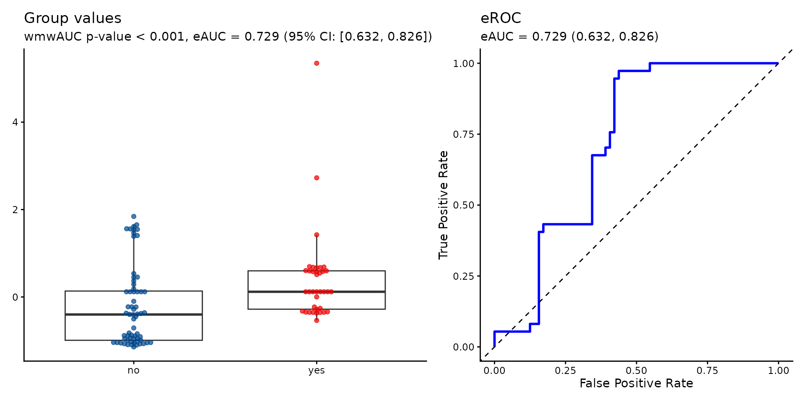
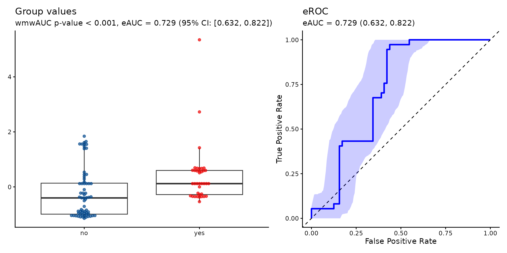

Performs the wmwAUC test of \(\mathrm{H_0\colon AUC} = 0.5\) based on the Wilcoxon-Mann-Whitney statistic.
Arguments
- formula
Formula of the form
response ~ group- data
Data frame containing continuous response variable and grouping factor
- ref_level
Character, reference level of grouping factor (if NULL, uses first level)
- pvalue_method
Character, method ('EU', 'BC') used for computing p-values (default 'EU')
- alternative
Character, alternative hypothesis is c("two.sided", "greater", "less")
- ci_method
Character, confidence interval method for eAUC: c('delong', 'boot', 'none')
- conf_level
Numeric, confidence level for intervals (default 0.95)
- pseudomedian
Logical; if TRUE, additionally reports the AUC-equalizing shift (pseudomedian) and its confidence interval (default FALSE)
- n_grid
Numeric, number of grid points for search in
wmwAUC_pseudomedian_ci()(default 1000)- ...
Additional arguments passed to
roc_with_ci()
Value
Object of class 'wmwAUC_test' containing:
- pseudomedian_requested
Logical indicating whether the pseudomedian was computed
- n
Named vector with components n1, n2 giving sample sizes for each group
- U_statistic
U statistic
- p_value
P-value for testing H0: AUC = 0.5
- alternative
Alternative hypothesis specification
- pvalue_method
Character string describing the test method
- data_name
Character string giving the name of the data
- pseudomedian
AUC-equalizing shift estimate (when pseudomedian = TRUE)
- pseudomedian_conf_int
Confidence interval for AUC-equalizing shift (when pseudomedian = TRUE)
- pseudomedian_conf_level
Confidence level for the pseudomedian interval (when pseudomedian = TRUE)
- ci_method
Method used to compute confidence interval for AUC
- roc_object
ROC analysis object returned by
roc_with_ci()- auc
Empirical AUC (eAUC), the standardized U statistic
- auc_conf_int
Confidence interval for true AUC using DeLong et al. or bootstrap method
- x_vals
Numeric vector of observations from non-reference group
- y_vals
Numeric vector of observations from reference group
- groups
Character vector of group labels from original data
- group_levels
Character vector of factor levels for grouping variable
- group_ref_level
Character string indicating which level corresponds to reference group
Details
The function tests the null hypothesis \(\mathrm{H_0\colon AUC} = 0.5\) against \(\mathrm{H_1\colon AUC} \neq 0.5\), where AUC represents the Area Under the ROC Curve.
The Exact Unbiased ('EU') method is used by default for computing p-values.
Bias-Corrected ('BC') method is available through pvalue_method = 'BC'
and is markedly conservative at small or imbalanced sample sizes; EU is
recommended unless BC's specific properties are wanted (see
wmwAUC_pvalue_BC).
Following the convention of wilcox.test() AUC equals the probability \(P(X > Y)\)
that a randomly selected observation from the first group exceeds a randomly
selected observation from the second group.
For response ~ group, observations from the non-reference group constitute \(X\),
while observations from the reference group (specified by ref_level) constitute \(Y\).
Thus AUC = P(non-reference > reference). If ref_level is not specified, the first
factor level is used as reference. The \(U\)-statistic and the resulting empirical AUC (eAUC)
are calculated consistently with this group assignment.
The test statistic is eAUC, which estimates the true AUC. The empirical ROC curve (eROC) is constructed by varying the classification threshold across all observed values and computing sensitivity and 1-specificity at each threshold.
When pseudomedian = TRUE, the function additionally reports the AUC-equalizing
shift \(\delta\), defined as the value solving
\(P(X < Y + \delta) = 0.5\); see
wmwAUC_pseudomedian_ci for details.
Confidence intervals for the true AUC are computed using either the DeLong et al. (1988) structural-components method based on asymptotic normality, or bootstrap resampling. If bootstrap resampling is selected, it is also used for constructing the confidence band for the ROC curve.
This function can call two independent sources of randomness: bootstrap
resampling (ci_method = 'boot'), and, when pseudomedian =
TRUE with a small sample (n1 + n2 < 20), wmwAUC_pvalue_EU's
Monte Carlo permutation fallback, called once per grid point inside
wmwAUC_pseudomedian_ci. For reproducible results, call
set.seed() immediately before wmwAUC_test() rather than
relying on the ambient RNG state; a single seed covers both sources, since
they draw from the same stream in a fixed order.
References
Grendar, M. (2025). Wilcoxon-Mann-Whitney test of no group discrimination. arXiv:2511.20308. (Full bibliography, including all methods and sources cited throughout this package, is given there.)
See also
print.wmwAUC_test for formatted output of wmwAUC_test().
plot.wmwAUC_test for plot of output of wmwAUC_test().
wmwAUC_pvalue_BC for details on computing p-values using the 'BC' method.
wmwAUC_pvalue_EU for details on computing p-values using the 'EU' method.
wmwAUC_pseudomedian_ci for details on computing confidence intervals for the pseudomedian.
wilcox.test for the Wilcoxon-Mann-Whitney test in base R.
rank.two.samples in package rankFD for an
implementation of the Brunner-Munzel test.
Examples
library('wmwAUC')
# \donttest{
library('gemR')
#>
#> Attaching package: ‘gemR’
#> The following object is masked from ‘package:stats’:
#>
#> loadings
data(MS)
da <- MS
# preparing data frame
class(da$proteins) <- setdiff(class(da$proteins), "AsIs")
df <- as.data.frame(da$proteins)
df$MS <- da$MS
# wmwAUC test
wmd <- wmwAUC_test(P19099 ~ MS, data = df, ref_level = 'no')
wmd
#>
#> wmwAUC Test of No Group Discrimination (H0: AUC = 1/2)
#>
#> data: P19099 by MS (n1 = 37, n2 = 64)
#> groups: yes vs no (reference)
#> U = 1726, eAUC = 0.729, p-value = 0.000012, method = EU
#> alternative hypothesis for AUC: two.sided
#> 95 percent confidence interval for AUC (delong):
#> 0.632 0.826
#>
plot(wmd)

# compute pseudomedian
set.seed(123L)
wmd_pm <- wmwAUC_test(P19099 ~ MS, data = df, ref_level = 'no', pseudomedian = TRUE)
#> Warning: Large computational load detected: 37x64 = 2,368 kernel evaluations x 1000 grid points = 2,368,000 total computations. Consider reducing n_grid for faster execution.
wmd_pm
#>
#> wmwAUC Test of No Group Discrimination (H0: AUC = 1/2)
#>
#> data: P19099 by MS (n1 = 37, n2 = 64)
#> groups: yes vs no (reference)
#> U = 1726, eAUC = 0.729, p-value = 0.000012, method = EU
#> alternative hypothesis for AUC: two.sided
#> 95 percent confidence interval for AUC (delong):
#> 0.632 0.826
#>
#> AUC-equalizing shift (pseudomedian):
#> 0.642 [solves P(X < Y + delta) = 0.5]
#> 95 percent confidence interval for the pseudomedian:
#> 0.465 0.934
#>
# compute confint for AUC by bootstrap
set.seed(123L)
wmd_ci_boot <- wmwAUC_test(P19099 ~ MS, data = df, ref_level = 'no', ci_method = 'boot')
wmd_ci_boot
#>
#> wmwAUC Test of No Group Discrimination (H0: AUC = 1/2)
#>
#> data: P19099 by MS (n1 = 37, n2 = 64)
#> groups: yes vs no (reference)
#> U = 1726, eAUC = 0.729, p-value = 0.000012, method = EU
#> alternative hypothesis for AUC: two.sided
#> 95 percent confidence interval for AUC (boot):
#> 0.632 0.822
#>
plot(wmd_ci_boot)

# BC method
wmd_bc <- wmwAUC_test(P19099 ~ MS, data = df, ref_level = 'no', pvalue_method = 'BC')
wmd_bc
#>
#> wmwAUC Test of No Group Discrimination (H0: AUC = 1/2)
#>
#> data: P19099 by MS (n1 = 37, n2 = 64)
#> groups: yes vs no (reference)
#> U = 1726, eAUC = 0.729, p-value = 0.000960, method = BC
#> alternative hypothesis for AUC: two.sided
#> 95 percent confidence interval for AUC (delong):
#> 0.632 0.826
#>
# }